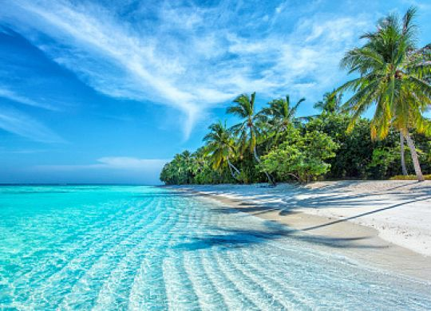

ПРО КРАЇНУ
ГАРЯЧІ ТУРИ НА МАЛЬДІВИ З КИЄВА
Мальдіви - це тропічний архіпелаг в Індійському океані, що складається з 1192 островів. 199 з них - заселені, а 80 є курортами. Острівна держава знаходиться в тропічній кліматичній зоні, тому протягом року температура тут практично не змінюється (310с вдень і 26 0С вночі, + 24-27 температура води в океані).
Багато туристів дуже дивуються, дізнавшись, що ще відносно недавно в цьому раю взагалі не було готелів. Перші поселення з'явилися на островах ще в другому тисячолітті до нашої ери. Мешканцями архіпелагу стали переселенці з Індії і Шрі-Ланки. У XVI столітті тут намагалися закріпитися і португальці, і голландці, але місцеві змогли зберегти незалежність. У 1887 році Мальдіви захопили англійці, але вже в 1965 році аборигени знову відвоювали свободу. Через 7 років після утворення республіки на архіпелазі з'явився перший курорт. Він відразу ж став дуже популярним, тому уряд Мальдів почав активно розвивати інфраструктуру.
ВІДПОЧИНОК НА МАЛЬДІВАХ - КОЛИ КРАЩЕ ПРИЇХАТИ НА МАЛЬДІВИ
Вартість турів на Мальдіви залежить від сезону. В тропічний рай можна летіти в будь-який час року, але найкраще - з грудня по квітень. В цей час тут не буває дощів, а море завжди спокійне. Влітку можливі короткочасні дощі (найчастіше вони йдуть вночі).
Дайверам варто приїхати сюди в січні-квітні. А ось в жовтні-листопаді тут не час для дайвінгу, адже біля берегів накопичується планктон, що істотно погіршує видимість. Втім, по ночах планктон світиться, тому якщо ви мріяли поплавати в фосфоресцируюючому морі, то не пропустіть можливість.
ТУРИ НА МАЛЬДІВИ - НАЙЦІКАВІШІ ПАМ'ЯТКИ ОСТРОВА
Ви вважаєте, що відпочинок на Мальдівах - це пляжі, дайвінг і ще пляжі? А ось і ні. Тут є багато пам'яток!
- Парк Султана. Заповідник, де ростуть дикі орхідеї, водяні лілеї і фікуси-баньяни. - Палац президента. Будівля виконана в колоніальному стилі і прикрашена декоративними деталями, характерними для місцевої культури. - Мечеть Великої П'ятниці. Найбільша мечеть на Мальдівських островах вибудувана з коралового каменю.
Важливо! Ввозити тварин в країну також забороняється (заборонені до ввезення предмети вилучаються і знищуються!). Вивозити корали з країни теж заборонено.